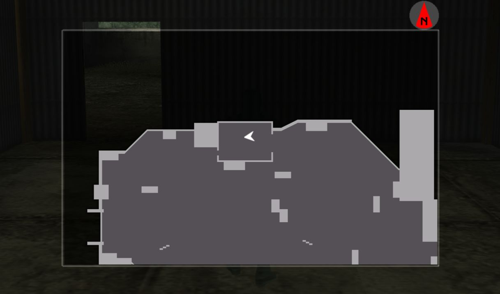
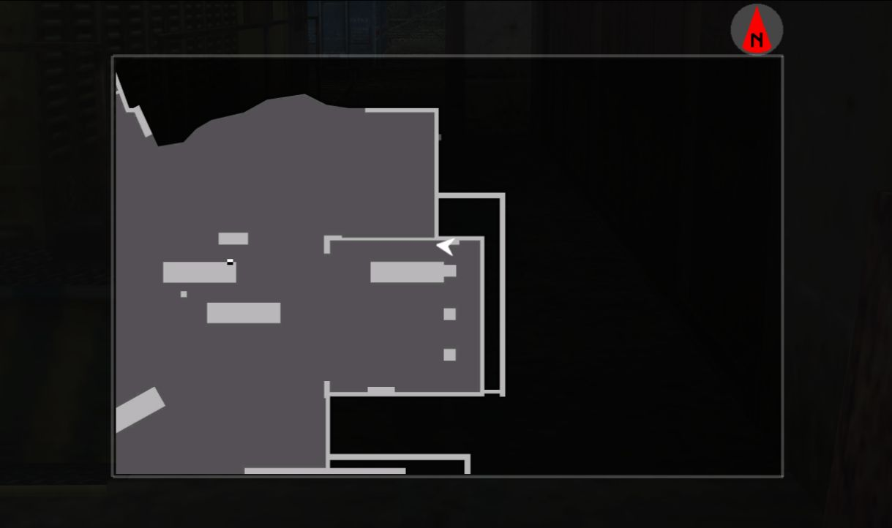
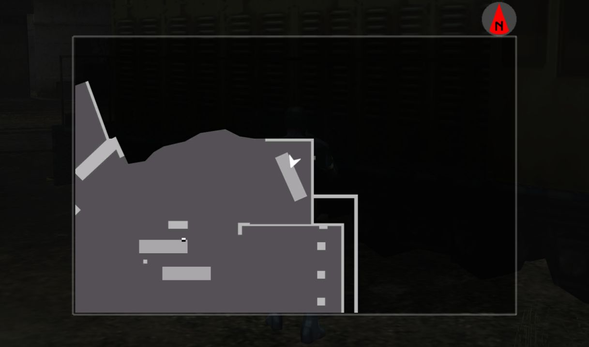
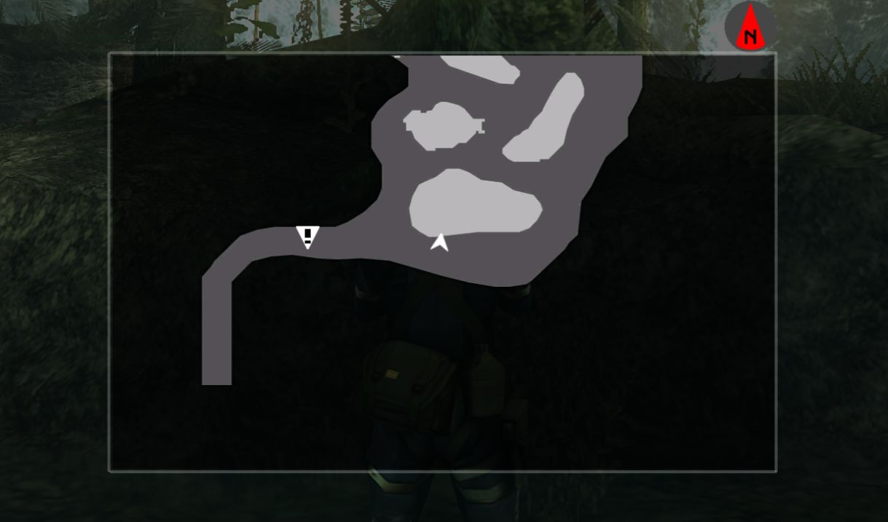

Mech Guide
Back to Database
This is a guide for defeating all of the Mech bosses in Peace Walker, including Armored Vehicles, Tanks and Attack Choppers. For a guide on defeating AI bosses, click here.
Table of Contents
General Tips
- If you have a health recovery item equipped when taking damage that should be lethal, the item will automatically be used and you won't die. Unequipping your healing items (or running out of them) leaves you vulnerable.
- Supply Markers are a must. Once you unlock Throwable supply markers, develop them immediately; they are much faster to use. Supply guns aren't worth it since it takes up a whole weapon slot.
- The faster you move, the easier it is to dodge attacks. Therefore, only take weapons that you are going to use, to reduce your weight. The Battle Dress weighs you down, but the extra defense makes using it worth it.
- Items have no weight, so you can take as many as you like. Even so, you should organise your inventory so that the most important items are closer together, which is really useful when you need to switch between items quickly.
- Take cover (where you can) when reloading. Cover is also useful for hiding behind when bosses use attacks that are very hard to dodge.
- Once you get the Infinity Bandana, getting an S rank on any of the boss fights becomes a lot easier. Recovery items and the bandana can't be equipped at the same time, so you should be mindful of your health when using it.
- If a teammate goes down, save them as soon as possible, but don't rush in to save them if it's not safe to do so or you're low on health. Equip the Rescue Box and press the action button while near a downed teammate to instantly revive them, or just spam the action button if you don't have one.
- Using a soldier with the Engineering skill can slightly increase damage done to mechs / AI Weapons.
Mech Tips
- The part of the mech that takes the most damage is its red fuel tanks, so aim for them. Destroying a fuel tank temporarily disables the mech from moving or attacking. Once all fuel tanks have been destroyed, focus your attacks on the treads (or the cockpit), as they take slightly more damage than the body of the mech. Attack Choppers have fuel tanks too, however the best way to attack one is to target the cockpit window with armor-piercing rounds (see below).
- Use a rank 3 Analyzer or higher on a mech to see the highest rank of the commander and how many more soldiers are left. If you develop the rank 5 analyzer, you'll be able to view these details through the pause menu, even when you haven't taken the Analyzer into the mission.
- Mechs will become stationary while deploying backup soldiers. If you time it just right, you could hit all four of the soldiers with a missile before they have a chance to split up.
The Commander
The most important part of battling mechs is that you don't have to destroy it to win. If you defeat / capture all of the soldiers, then get the mech's health down to a certain level, the commander will pop out; either killing or tranquilizing the commander will end the fight and allow you to capture the mech for use in OUTER OPS. The higher difficulty rating the mission has, the more soldiers there will be and the lower the mech's health will have to be before the commander pops out. The commander will also reveal himself if every soldier has been defeated without being detected by the mech, or if the cockpit window is broken.
Mechs Breakdown
There are three types of mechs; Armored Vehicle, Tank, and Attack Chopper.
Mech Types
Armored Vehicles
- BTR-60PA
- BTR-60PB
- LAV-Type G
- LAV-Type C
Tanks
- T-72U
- T-72A
- KPZ 70
- MBTK-70
Attack Choppers
- MI-24A
- MI-24D
- AH56A-Bomber
- AH56A-Raider
There are also Custom versions for each of these vehicles, which do more damage and are overall more powerful.
Attacks
Machine Gun - Every mech has this. Depending on the mech (and the type of machine gun it has), it might be easily avoidable or very accurate and powerful. Sometimes when the mech attacks with the machine gun it will have terrible accuracy, sometimes almost every bullet will hit its mark. You shouldn't underestimate how much damage it can do, especially for the Armored Vehicles that rely on it. Sometimes the machine gun does a "sweep" attack from one side of you to the other; this is relatively easy to step out of the way of, if you can recognize when it is happening.
Cannon - Every tank, and the LAV-Type C, has this. The mech will telegraph when the cannon
is about to fire by shouting "Fire!" or "Take this!" - this is your cue to get out of the way and into
cover. The cannon can fire up to 4 times in one go, the time between each shot can vary between less than
a second to a few seconds. More powerful mechs can fire the cannon up to 5 times in one go. There are a few
giveaways you can pick up on to be sure that it won't fire another round, just in case it does when you
aren't expecting it to. The first is by counting how many shots it's fired; if it fired the maximum amount
of times, it's safe to come out of cover and shoot. If the mech starts using the machine gun, or says
another voice line, it won't fire another round.
The cannon can either aim directly at you or slightly to the left/right, and can either fire at your
torso or your feet. If you're out in the open and the mech decides to aim directly at your feet, there's not
much you can do to dodge, except possibly a fast run speed and a very well-timed roll. If you can tell the
tank is aiming slightly to the left/right of you, run the opposite direction, roll away at just the right
time, and you'll dodge it. Where the cannon aims at is just RNG, so your safest bet is to just stay
in cover.
Ram - Every Armored Vehicle and Tank does this. If you get too close to a land mech, it will suddenly veer towards you and try to hit you. If it succeeds, you'll be knocked to the ground. There isn't much you can do to dodge this, since the mechs are fast and huge, but you can prevent it from trying to do this by not getting too close. You may also get run over by accident if you are in its way.
Tank Missiles - Only the MBTK-70 and its Custom variant has this. This is a missile launcher that fires 1-4 missiles in bursts. It can fire up to 3 bursts in a row. The missiles are fired into the sky before going in your direction. This attack is very good at getting you out of cover, especially if you are standing still, as the missiles can curve to get to your location. This attack is quite easy to dodge however; simply keep moving left or right, perpendicular with the mech, and the missiles won't be able to hit you. Again, this attack is only dangerous when you aren't moving.
Chopper Missiles - Every Chopper except for the Bomber has this. The chopper has two missile
launchers on either side that it can fire. Depending on the chopper, the missile launcher can be decently
easy to dodge or very hard to deal with. Some choppers fire both of their missile launchers at once, others
fire one side first, then the other. When a chopper fires a missile launcher on just one side, run in the
direction of the opposite side; this should give you enough space to dodge it, however for stronger
choppers, you may have to
roll to escape the blast radius.
Sometimes, the chopper can do a bombing run, like the Carpet Bomb attack detailed below. The chopper will
fly into the distance, telegraph its attack with a voiceline, and fire its missile launchers in a straight
line towards you. To dodge this, simply run either left or right, rolling away at just the right time if you
need to.
Carpet Bomb - Only the AH56A-Bomber has this. The chopper flies into the distance, telegraphs the attack (either a "Get out there!" or "Here comes a big one!"), then drops multiple bombs in a line. This is probably the easiest attack to dodge out of all of them; simply run to the left or right of the line of bombs that are dropped.
How To Defeat Choppers
Defeating Armored Vehicles and Tanks is quite simple - defeat all of the soldiers first, then do enough
damage to the mech by shooting missiles at the fuel tanks (then the treads) until the commander pops out.
This is the same for choppers, however there is an easier way to defeat and S rank chopper battles. This is
because the cockpit has its own separate health pool, that can be damaged by using armor-piercing rounds.
This means that any armor-piercing machine guns, anti-tank sniper rifles, or the Railgun can break the
cockpit. Once the cockpit is broken, the commander pops out and can be tranqed / killed, no matter how many
soldiers are left or how much health the chopper has.
The best method for S ranking chopper battles is this. Develop the PTRS1941, which is the rapid-fire version
of the anti-tank sniper rifle. Start the mission, sneak up on the four starting soldiers and hold them
up. As long as they don't die or another soldier comes along and picks them up, they will stay like this
forever, and no more soldiers will spawn. Then, start attacking the chopper, aiming for the cockpit. After
around 2 health bars are depleted, the cockpit will break; use the Mk.22 on the commander and get an S
rank.
Backup Soldiers
Every mech will have a certain number of soldiers they are able to spawn as backup. The more difficult the mission, the more soldiers there will be. The amount of soldiers also scales with the amount of players in the mission. There can only be four living soldiers on the map at a time (not including the commander). The mech can call for backup in two ways; either deploying the soldiers directly from the mech, or the soldiers randomly spawning somewhere on the map. When deploying directly from the mech, four soldiers will appear at a time. Soldiers spawning randomly are harder to deal with, however make the fight go faster as you don't need to wait for the mech to randomly decide to release more backup soldiers. A flashbang is dropped when a backup soldier is about to spawn, which will make a loud sound, and if you are currently looking at where the soldier will spawn then the screen flashes white.
Attack Choppers are slightly different in how they call backup; for battles in the Waterfall map that don't have soldiers deploy from the chopper, the soldiers don't spawn randomly around the map. Instead, they arrive from the path in the south-west of the map. The soldiers also won't attack until they get all of the way up the path and past the invisible wall. This makes dealing with the soldiers much easier, as you can quickly take all of them out while having good cover against most of the chopper's attacks.
Map Tips
There are three different maps that mech bosses take place in; the Banana Farm (Bananal Fruta de Oro: Farm), the Trainyard (El Cadalso), and the Waterfall (Catarata de la Muerte, Attack Chopper only). There are some good spots in all of these maps.
Banana Farm
The absolute best place to stay in this map is the shed, located to the north (to the right of where you start). It provides lots of cover, protection from the AH56A-Bomber, (some) protection from the MBTk-70's missile launcher, and entryways on either side so you can't be cornered. The shed does have some weaknesses; its walls can be blown up and destroyed, either by your own explosives, the enemy soldier's explosives, or the mech either blowing it up or (rarely) ramming into it. Also, some explosive attacks can hit you through the walls, so you need to be mindful of not getting too close to the wall. Finally, mechs sometimes try and shoot explosives through one of the doorways, in which case nowhere in the shed is completely safe. When the mech has a clear shot through one of the doorways, you should consider leaving through the opposite end of the shed. For mechs that have enemies spawn randomly, one of the spawn locations is inside the shed, however only one can spawn at a time. The AH56A-Bomber and the Custom variant can't break the roof, however any bombs could still reach you through the walls.

Trainyard
My favourite spot in this map (against mechs without explosives) is in the corner behind the train engine, inside the large building. It allows you to keep an eye on the south and the east, while providing lots of cover.

If you're fighting a mech that has explosives, this fight becomes much more complicated, as any explosives fired by the mech will knock over the obstacles around the trainyard.
When I fight a mech with explosives, I bait the mech to the south side of the map, and try and get it to hit the south side of the train with an explosive. If done correctly, the train will go flying, break the large door to the north and land in the north-east corner of the map; stand behind this. I like this spot even better than the previous, as the train is at a good angle unlike the previous spot where enemies approaching from the west could get a clean shot at you from a distance. If the train gets hit from the north face instead, it will still land in a corner but the angle is more awkward and won't be as good for cover.

If you can't do the train strategy, you should instead rely on any knocked-over train cars for cover. If a train car knocks into you it will damage you and knock you over, so avoid standing near one that hasn't been knocked over yet.
The two cranes in the middle of the map are good for cover in an emergency, but they are very thin. If the mech fires an explosive while moving or slightly misses the crane, you will get hit.
Waterfall
The safest place to stay in this map is the south-west corner, behind the tree. This gives you complete cover from machine guns and missiles. Plus, it gives you line of sight of the western path, where backup soldiers can arrive from. The trees cover most of the sky, which makes it harder to aim at the chopper when it is directly above you. If there are explosive barrels on the map, obviously don't stand next to them; you could try and use them against the soldiers.

S Rank Mech Missions
To get an S rank in a mission against a mech, you need to complete the mission within a certain amount of time, without any kills. The easiest way to do this is to get the Infinity Bandana, Fulton Launcher, and Battle Dress w/ Helmet. Use all of the tips in this guide, fulton all of the soldiers, attack the mech until the commander pops out, then tranq him to get an S rank. It is entirely possible to get an S rank before you get all of this equipment, but for the majority of fights, especially the difficult ones, it simply isn't worth all the trouble.
Q: If a soldier is killed but not by me, will I still get an S rank?
A: It depends. If the mech ran the soldier over, or if they got blown up by another soldier or themselves, it won't affect the rank. However if another player kills a soldier, you will not get an S rank.
Q: Should I try and get an S rank on a mech fight with other random players?
A: No, because:
- The amount of soldiers in the mission scales with the player count; difficult mech bosses can have up to 99 soldiers to defeat!
- There is no guarantee that everyone will agree to keep the fight non-lethal, especially players who have only brought lethal weapons.
- Even if a single player uses a staff member with the "Sidekick" ability, you are locked out of getting an S rank; this is because staff members with the Sidekick ability automatically compliment other players with a Battle Cry whenever they take down an enemy soldier. Battle cries restrict the rank to an A or below, and most high-level Combat soldiers have the Sidekick ability. (This doesn't apply to AI fights)
You should definitely play mech fights in CO-OPS if you're stuck, plus if you have people to play with, getting an S rank in all of the missions is 1000x easier.
Mech Stealth
It is possible, although very difficult, to complete mech bosses using stealth. If you defeat all of the soldiers without being detected by the mech, the commander will pop out, no matter how damaged the mech is. You do not need to complete a boss without being detected to earn an S rank, you simply need to beat the boss fast and non-lethally.
The mechs have much better sightlines than any soldier in the game. If you have a bad camo index (e.g. because of the Battle Dress) a mech will be able to spot you from halfway across the map if you get in front of it. If you start shooting at the mech, it will spot you from anywhere no matter the camo index, unless you're using Stealth Camo.
Note that although Stealth Camo can be used to take down a mech undetected, it does not completely hide you, so if you get close enough to the mech while attacking it will be able to spot you. Also, if you are at the point in the game where you have Stealth Camo, you should also have access to strong weapons that makes getting an S rank a much easier option.
Normal Method
You can complete a mech boss with stealth by fultoning the first four soldiers, then wait until the next four soldiers are deployed, then fulton them. Repeat until the commander pops out, then tranq him. This method does not work for Attack Choppers as their paths are so unpredictable that they could easily turn around without you expecting it and spot you. It does not work for mech bosses that rely on randomly spawning soldiers throughout the map instead of only deploying them from the mech. It also does not work if you run out of fultons, as you cannot get more fulton systems / mines through resupplies.
The usual method to beat a mech stealthily is this: Equip the Sneaking Suit, and bring Fulton Recovery Systems, Fulton Mines, smoke grenades and the Mk.22 tranq pistol. You could swap out the Mk.22 for the Mosin-Nagant, however it is much harder to aim especially if the mech is moving. If you don't want an S rank and don't want to risk dying at the very end, swap out the tranq weapon for a missile launcher. Bring as many recovery items as possible. Once the mission starts, sneak around behind the mech, avoiding the mech and the soldier's lines of sight. The mech can spot you very easily, so try not to get in front of it. Be wary of when the soldiers occasionally stop and look in all directions; you can avoid getting spotted like this by bringing a cardboard box and not moving when they look in your direction. If you get spotted at all, you'll need to restart the mission from the beginning.
Once you're behind the soldiers, hold them all up and fulton them. Then continue to follow the mech as it moves. The mech can't hear footsteps, however the soldiers can which is why the Sneaking Suit is used. After a while, the next batch of 4 soldiers will be deployed by the mech; right as the commander says "Backup, prepare for immediate deployment" and before the soldiers get out, throw a smoke grenade in the place that the soldiers get out from. The soldiers should get out and be stunned by the smoke. Next, hold all of them up (after their "stun" animation is finished), and either Fulton them, or when your fultons run out, place a Fulton mine between the four of them and detonate it by shooting it with the Mk.22. You could also skip holding them up and instead place the mine down while they are stunned, however this is riskier especially with lower-ranked smoke grenades that last shorter.
Once all soldiers have been fultoned, the commander will pop out. If you want an S rank, take out your Mk.22 and spam shots at his head, knocking off his helmet. It doesn't matter if you get spotted at this point, which is good because it is very hard to avoid getting spotted by the commander once he's out. Equip your healing items in case he does too much damage to you. Keep spamming headshots until he is tranquilized, and as long as you didn't take too long, you should get an S rank. If you don't want an S rank (presumably because you just want to beat the mission to unlock another mission and you don't want to risk getting killed by him now), fire a missile at the commander to instantly kill him.
Before you try this method you need to see if you have enough fultons. You can use the Analyzer to see how many soldiers the mech has. You can take a maximum of 5 fulton mines into a mission, and if you manage to fulton 4 soldiers with 1 mine each time then you can fulton a total of 20 soldiers with just the mines. Then look at how many fulton recovery devices you can take; accounting for the fulton mines, if you have a rank 1 fulton you can recover 29 soldiers, and with a rank 5 fulton you can recover 33.
Attack Chopper Method
The method for stealthily completing Attack Choppers is simpler, although this only really works for the Banana Farm map. Sneak up to the four starting soldiers, hold them up but don't fulton or kill them. Get to a corner of the map (usually the south-east), wait until the chopper is at the north-east corner, then shoot the cockpit with the PTRD1941 (or PTRS1941). The chopper will turn to look in your direction; do NOT shoot it again, otherwise it will spot you. Once the chopper starts turning away or moving again, shoot the cockpit again. Repeat this, calling in a supply drop if you run out of ammo. The mech will not spot you as long as you shoot it when it isn't staring at you. Eventually the cockpit will break and the commander will pop out; tranq him with the Mk.22. This works for the Banana Farm, however is much harder in the Waterfall as the map is much smaller so the chopper can easily spot you, on top of the foliage blocking most of the sky, so it probably isn't worth it for choppers on this map.
Aggressive Stealth Method
While this isn't a true "stealth" method, it does allow you to take out all of the soldiers before focusing on the mech. This is only really useful if you're looking to S rank a mech, without the stress of dealing with the soldiers and the mech at the same time.
You'll need the fulton launcher and the bandana. You can do this in the Banana Farm map by sneaking around to the shed, and standing at the north-west corner, to the left of the doorway. To make getting there easier and to stop yourself from getting spotted from across the map, crouch-run along the edge of the map and unequip your weapon to boost your camo index. You can also do this in the Trainyard map by going to the train spot mentioned before, but be mindful that the mech might wander too far south and end up spotting you from across the map.
Once you're in place, fire your fulton launcher to attract soldiers to your location. As soon as you see a soldier, fulton them. If you do it like this, even if the soldier spots you and sounds the alarm, the mech won't realize you're there and won't start attacking. However, if the mech sees even a tiny part of you, it will spot you, so stay away from its sightlines. The mech will start attacking if you get spotted by a soldier while using any other weapon, but not with the fulton launcher.
Once all of the soldiers are gone, the commander will not pop out like with the other stealth method. However, this now gives you a chance to take on the mech yourself with a full health bar (if the soldiers didn't manage to damage you), a full inventory of recovery items, and a Mk.22 for tranqing the commander to get an S rank.
Realistically, I wouldn't try and beat mechs with stealth unless it's a low-level mech with a small amount of soldiers, or if you want to unlock a specific mission or item without having the powerful weapons to battle it normally. Especially for mechs with lots of soldiers, it is a test of endurance, and any mistake like getting spotted or running out of Fulton Systems / Mines will force you to restart from the beginning. If you're stuck on a difficult mech battle but need to complete it to get better weapons/items, play the mission in CO-OPS. If you need to S rank a mech battle, get the Infinity Bandana and Fulton Launcher.